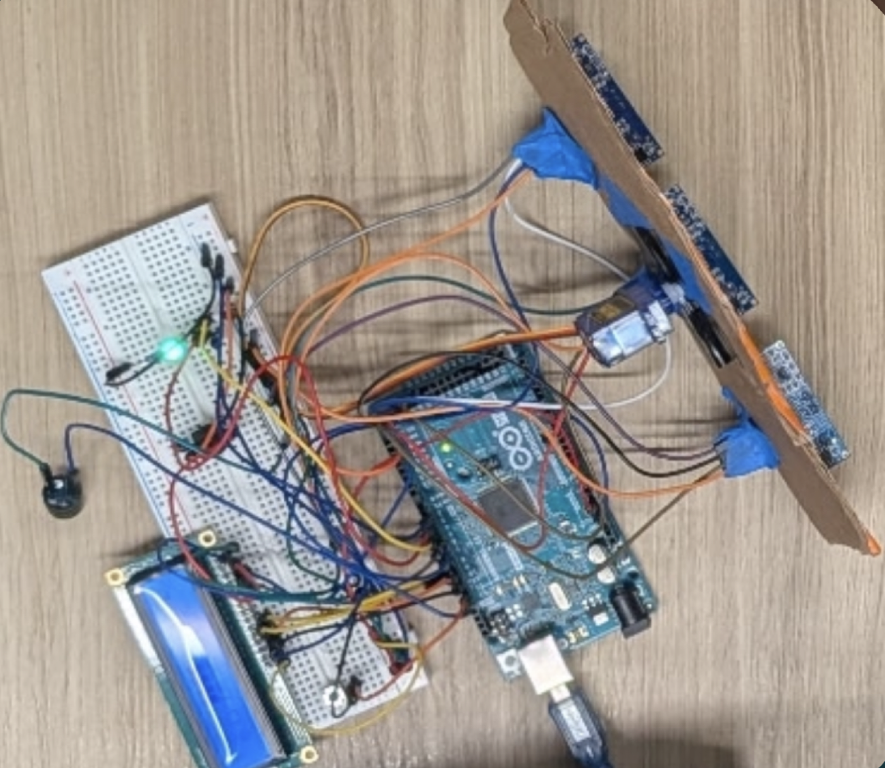
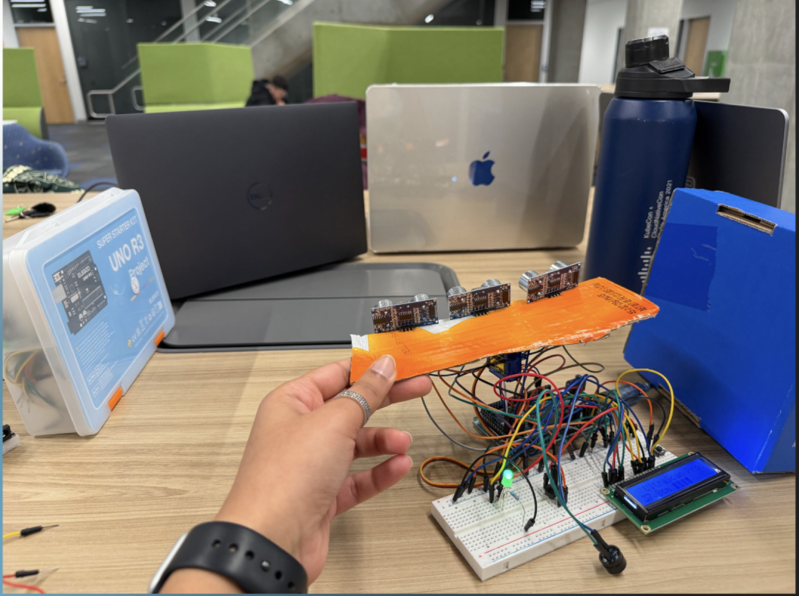
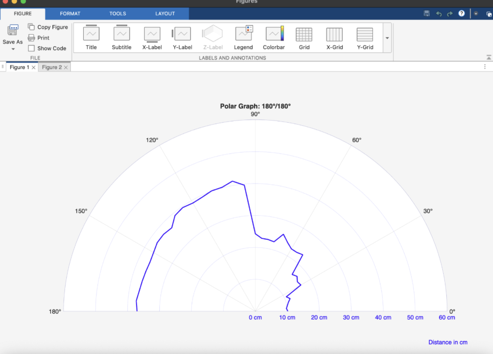

← All work
UltraScan Pro — an Arduino ultrasonic imaging system

Project Background
Arduino-based course project focused on microcontrollers, sensor integration, and engineering design.
Developed an ultrasonic scanning system with MATLAB visualization to map nearby objects in real time.
My Contribution
- Led a four-person team and coordinated integration across the ultrasonic sensor, servo motor, LCD interface, and MATLAB visualization.
- Coded the LCD interface, LED indicators, and motion-alert features.
- Coordinated subsystem testing and iteration as the team moved from individually functioning components to a fully integrated prototype.
- Helped troubleshoot a failed stepper-motor integration and supported the transition to a servo-based design to keep the project moving.
Results
- Built a functional prototype that generated a real-time 180° spatial map of surrounding objects.
- Adapted the design after the original stepper-motor approach could not be integrated reliably.
- Placed 2nd out of 19 teams in the course project.
Key takeaways
- Learned the importance of rapid prototyping and early integration for identifying system-level issues sooner.
- Learned to stay flexible when an engineering approach does not work as intended and to adjust the design based on testing.
- Strengthened technical leadership by keeping a small team aligned around subsystem interfaces, testing, and a shared final system.

